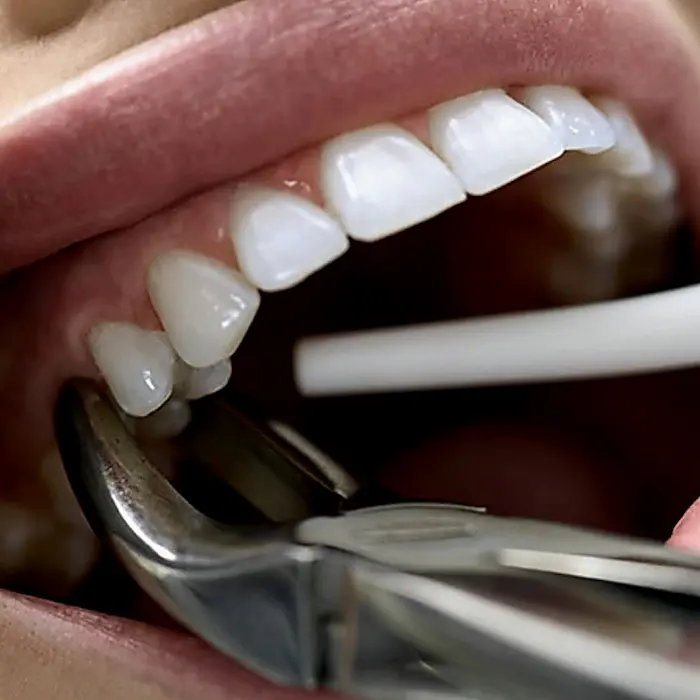
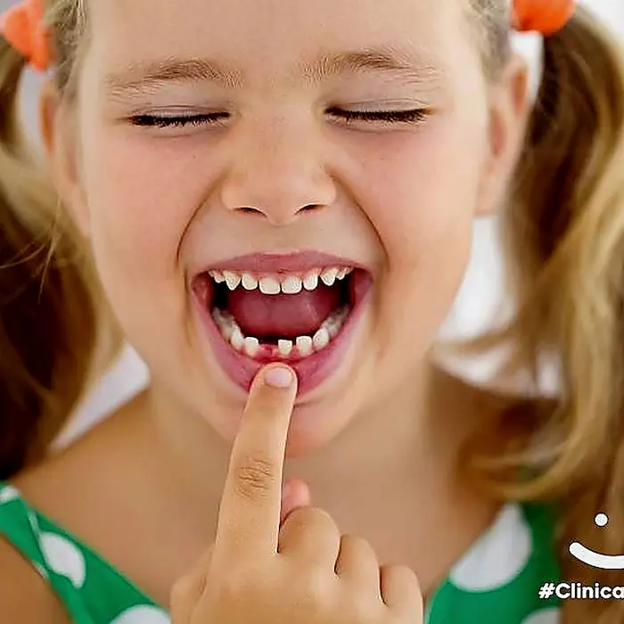
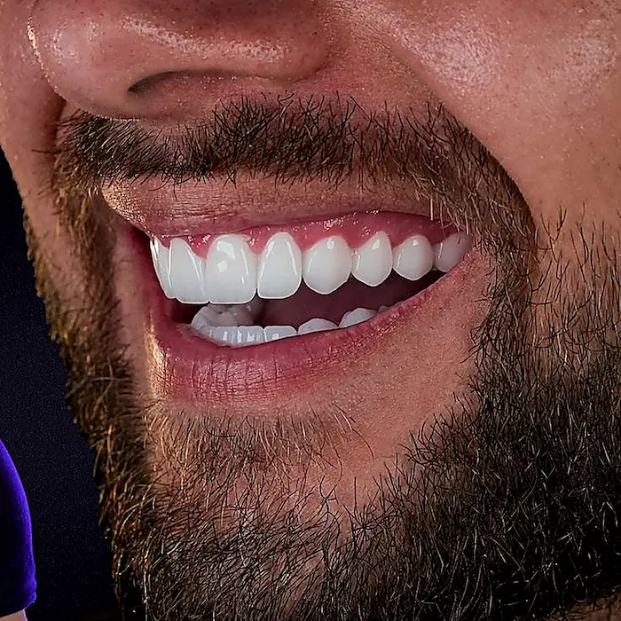
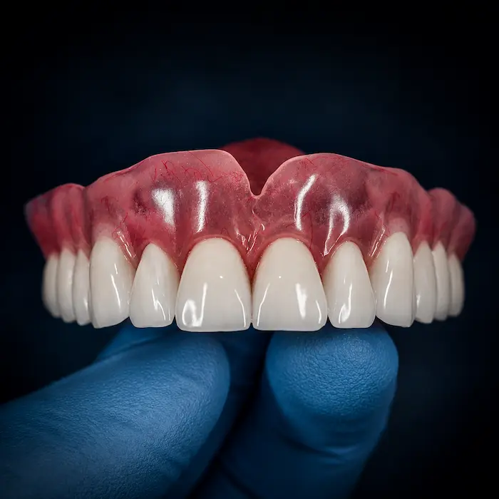

4,9 ★ no Google
Avaliações reais de pacientes
Sua Clínica Odontológica
4,9 ★ no Google
Avaliações reais de pacientes
Facetas, Clareamento,
Restauração e Dente Quebrado
4,9 ★ no Google
Avaliações reais de pacientes
Implantes, Próteses,
Facetas e Canal


11unidades em Fortaleza
24hurgência e emergência
Popularcondições acessíveis
Rápidofale direto no WhatsApp
Especialidades
Escolha a especialidade e clique para falar no WhatsApp.

Implantes
Reabilitação com segurança e conforto.
Falar no WhatsApp →
Canal
Alívio da dor e tratamento endodôntico.
Falar no WhatsApp →
Extração
Sisos e dentes inflamados com urgência.
Falar no WhatsApp →
Odontopediatria
Cuidado infantil com acolhimento.
Falar no WhatsApp →
Facetas de resina
Estética com resultado natural.
Falar no WhatsApp →
Próteses
Removíveis e fixas, conforto ao sorrir.
Falar no WhatsApp →
Prótese parafusada
Estabilidade e excelente adaptação.
Falar no WhatsApp →
Restauração
Resolva sensibilidade e Estética.
Falar no WhatsApp →
Conserto de Próteses
Polimento, Limpeza e Conserto de próteses quebradas
Falar no WhatsApp →
Gengivoplastia
Correção do sorriso gengival com técnica e segurança.
Falar no WhatsApp →
Aparelho Odontológico
Corrija o posicionamento dos dentes e transforme seu sorriso.
Falar no WhatsApp →
Reconstrução de Dente
Fratura, Trauma e Dente quebrado, atendimento é imediato.
Falar no WhatsApp →
Quando procurar atendimento imediato?
Dor, inchaço ou dente quebrado não precisam esperar.
Quanto antes você fala com a equipe, mais rápido conseguimos orientar o melhor caminho. Plantão 24h, todos os dias, na unidade Presidente Kennedy.
Quero atendimento agora✅ Dor de dente intensa
✅ Canal inflamado
✅ Inchaço ou infecção
✅ Siso inflamado
✅ Prótese quebrada
✅ Trauma ou dente quebrado
Depoimentos
Avaliações reais de pacientes que confiaram no atendimento da Dentalli.

Cristina lima Santos
★★★★★
G
“Oi! Meu atendimento com Dr.Carlos tem sido muito excelente, desde o primeiro momento ele muito dedicado e atencioso explicando todo procedimento a ser feito . Eu super indico!!! Parabéns Dr. Carlos por tanta dedicação com o cliente. ❤️ 👏”
Ver avaliação completa →
Alia Barbosa
★★★★★
G
“Excelente profissional! Atendimento atencioso, cuidadoso e muito competente. Meu tratamento saiu perfeito. Recomendo demais o Dr. Carlos.”
Ver avaliação completa →
Flavio Hildeberto
★★★★★
G
“Ótimo Profissional! Atencioso, com esmerada ética e capacidade em solucionar os mais variados entraves odontológicos! Dr Carlos merece mais que cinco estrelas!”
Ver avaliação completa →
Arícia Fonsêca
★★★★★
G
“Profissional exemplar! Demonstra domínio técnico, cuidado real com o paciente e muita paciência ao explicar opções de tratamento. O consultório é organizado, a equipe é acolhedora e o resultado do meu atendimento ficou perfeito. Um dos melhores dentistas que já fui.”
Ver avaliação completa →
Carolina costa
★★★★★
G
“Fiz um procedimento de extração com o Dr. Victor , eu já tinha olhando as avaliações da clínica e vi o quanto ele era elogiado, e é uma alegria ser atendida por ele, paciente, cuidadoso , sincero e muito profissional, voltarei porque achei meu odontologista e indicarei muito ele, Parabéns a ele e a sua parceira de sala. Obrigada pelo o atendimento excepcional e acolhedor ♥️.”
Ver avaliação completa →
thiago cabral
★★★★★
G
“O Dr. Carlos é um profissional raro: extremamente competente, atencioso e preparado. Ele não apenas oferece um atendimento técnico de excelência, mas um cuidado humanizado difícil de encontrar hoje em dia. Precisei dele em um momento de muita dor, durante um feriado, e ele foi impecável. Resolvemos tudo da melhor forma, com uma agilidade e qualidade profissional muito acima da média. Sou eternamente grato!”
Ver avaliação completa →Nossas Unidades em Fortaleza
11 unidades espalhadas pela cidade • Presidente Kennedy • Dionísio Torres e muito mais
Esta unidade · Plantão 24h
Dentalli Presidente Kennedy
Av. Dr. Theberge, 2111 - Presidente Kennedy, Fortaleza - CE, 60335-480
Plantão 24h, todos os dias · (85) 99260-4260
Dúvidas frequentes
Respostas rápidas para quem precisa de atendimento odontológico em Fortaleza.
Vocês possuem cirurgião bucomaxilofacial em Fortaleza?
Sim. A Dentalli conta com atendimento em bucomaxilofacial em Fortaleza para avaliação de cirurgias mais complexas, extração de siso, traumas, fraturas e procedimentos odontológicos que exigem maior cuidado.
Fazem extração de siso incluso?
Sim. Realizamos avaliação para extração de siso incluso, semi-incluso ou impactado. O paciente passa por análise clínica e, quando necessário, exames de imagem para definir a melhor conduta.
Atendem dor de dente de madrugada?
Sim. A Dentalli oferece atendimento odontológico de urgência para dor de dente intensa, inclusive de madrugada. Plantão 24h, todos os dias, na unidade Presidente Kennedy.
Dentista 24 horas em Fortaleza existe?
Sim. A Dentalli trabalha com atendimento de urgência odontológica 24h em Fortaleza para casos como dor intensa, canal inflamado, infecção, fratura dental, siso, abscesso e prótese quebrada.
Fazem canal de urgência?
Sim. Realizamos avaliação para tratamento de canal de urgência em casos de dor forte, inflamação, infecção ou sensibilidade intensa. O objetivo é aliviar a dor e iniciar o tratamento com segurança.
Consertam prótese quebrada?
Sim. A Dentalli atende casos de prótese dentária quebrada, solta ou machucando. A equipe avalia se é possível fazer reparo, ajuste ou substituição da prótese.
Atendem turistas em Fortaleza?
Sim. Atendemos turistas em Fortaleza que precisam de dentista de urgência, seja por dor de dente, fratura, restauração quebrada, canal, siso ou problema com prótese durante a viagem.
Fazem implantes dentários?
Sim. A Dentalli realiza avaliação para implantes dentários em Fortaleza, incluindo planejamento, exames, cirurgia de implante e opções de prótese sobre implante conforme cada caso.
Quanto custa uma extração de siso?
O valor da extração de siso depende da posição do dente, grau de dificuldade, necessidade de exames e tipo de procedimento. Para informar corretamente, é necessário passar por avaliação odontológica.
Atendem emergência odontológica?
Sim. Atendemos emergência odontológica em Fortaleza para dor intensa, infecção, abscesso, fratura dentária, trauma, sangramento, canal inflamado, siso e prótese quebrada.
Fazem drenagem de abscesso?
Sim. Casos de abscesso dentário, inchaço ou infecção devem ser avaliados com urgência. Quando indicado, o dentista pode realizar drenagem, medicação e tratamento da causa do problema.
Fazem facetas de resina?
Sim. A Dentalli realiza avaliação para facetas de resina em Fortaleza, indicadas para melhorar cor, formato, tamanho e harmonia do sorriso de forma estética e personalizada.
Fazem gengivoplastia?
Sim. Realizamos avaliação para gengivoplastia, procedimento estético indicado para melhorar o contorno gengival, reduzir excesso de gengiva aparente e deixar o sorriso mais harmônico.
Trabalham com aparelho dentário?
Sim. A Dentalli oferece avaliação ortodôntica para aparelho dentário, alinhamento dos dentes, correção da mordida e planejamento de tratamento conforme a necessidade de cada paciente.
Fazem prótese protocolo?
Sim. Realizamos avaliação para prótese protocolo sobre implantes, uma opção para quem perdeu vários dentes e busca mais estabilidade, conforto e segurança ao mastigar e sorrir.
Fazem enxerto ósseo?
Sim. A necessidade de enxerto ósseo é avaliada em consulta, principalmente em casos de implantes dentários quando há pouca estrutura óssea para receber o implante com segurança.
O atendimento é particular?
Sim. A Dentalli Presidente Kennedy atende exclusivamente pacientes particulares, com condições de pagamento facilitadas. Fale com a equipe pelo WhatsApp.
Como marcar uma consulta?
Para marcar uma consulta na Dentalli Presidente Kennedy, clique em um dos botões de WhatsApp do site, conte o que você precisa e a equipe combina o melhor horário com você.
Onde fica a unidade?
A Dentalli Presidente Kennedy fica na Av. Dr. Theberge, 2111 - Presidente Kennedy, Fortaleza - CE, 60335-480, com plantão 24h, todos os dias. A rede Dentalli tem 11 unidades em Fortaleza.
O atendimento é imediato?
Em casos de urgência odontológica, o atendimento é feito no plantão 24h, todos os dias, na unidade Presidente Kennedy. Situações como dor intensa, fratura, infecção ou prótese quebrada têm prioridade.
Fale agora com a Dentalli
Clique e fale com a equipe no WhatsApp. Se preferir, ligue direto.
Atendimento
Urgência e emergência
11 unidades em Fortaleza
Atendimento popular